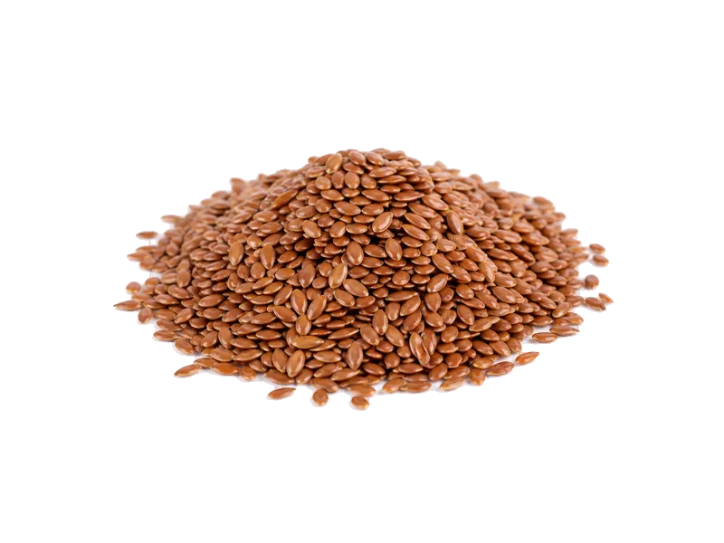

Orzechy
Siemię lniane (nasiona lnu)
Siemię lniane (nasiona lnu): 18 g białka, 534 kcal, 29 g węglowodanów i 42 g tłuszczu na 100 g. Kategoria: Orzechy.
Kalorie534 kcalna 100 g
Białko / proteiny18 g
Węglowodany29 g
Tłuszcz42 g
Cena (szac.)~0,90 złza 100 g
Ceny zaktualizowano: sierpień 2026 (szacunek — ceny w popularnych supermarketach)
Porcja: łyżka (15g)
| Kalorie | 80 kcal |
|---|---|
| Białko | 2.7 g |
| Węglowodany | 4.3 g |
| Tłuszcz | 6.3 g |
| Cena (szac.) | ~0,15 zł |
Szczegółowe składniki odżywcze na 100 g
| Wartość energetyczna (kalorie) | 534 kcal |
|---|---|
| Białko (proteiny) | 18 g |
| Węglowodany | 29 g |
| Tłuszcz | 42 g |
| Tłuszcze nasycone | 3.7 g |
| Tłuszcze nienasycone | 38.3 g |
| Witaminy i minerały (skrót) | Witamina B1, Miedź, Mangan |
| Współczynnik kcal / 1 g białka | 29.7 |
| Cena produktu (szac. za 100 g) | ~0,90 zł |
| Cena za 100 g białka (szac.) | ~5,56 zł |
Witaminy i minerały na 100 g
Ilość w 100 g produktu oraz orientacyjny % dziennego zapotrzebowania (RDA) dla dorosłej osoby. Żelazo wg normy dla kobiet; sód jako % limitu. Wartości typowe (USDA / tabele żywieniowe / etykiety) — mogą się różnić między markami.
-
Witamina B1 (tiamina) 1.6 mg
-
Witamina B2 (ryboflawina) 0.16 mg
-
Witamina B3 (niacyna) 3 mg
-
Witamina B5 1 mg
-
Witamina B6 0.47 mg
-
Witamina B9 (foliany) 87 µg
-
Cholina 79 mg
-
Wapń 255 mg
-
Żelazo 5.7 mg
-
Magnez 392 mg
-
Fosfor 642 mg
-
Potas 813 mg
-
Cynk 4.3 mg
-
Selen 25 µg
-
Miedź 1200 µg
-
Mangan 2.5 mg
-
Sód 30 mg